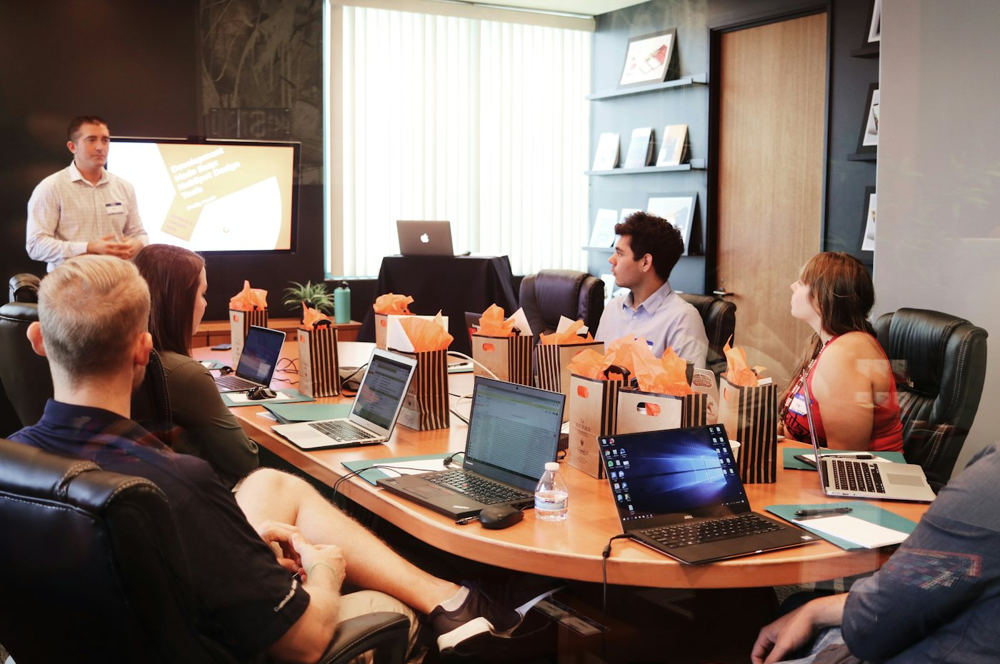

Curitiba — PR
Decisões de capital tomadas com números, não com intuição.
Um sócio e um consultor dentro da sua empresa dois dias por semana, trabalhando com a sua equipe e não em paralelo a ela.

- +7,2
- pontos de margem, em média, nos projetos de finanças
- 140
- empresas atendidas
- 15
- anos de atuação
- R$ 4,6 mi
- liberados em caixa no maior projeto de 2025
Frentes de trabalho
Três frentes, que quase sempre se cruzam no mesmo projeto.
Estratégia e crescimento
Onde investir nos próximos três anos, o que abandonar e quanto isso custa.
Finanças e resultado
Margem por produto, por cliente e por canal, com orçamento que as áreas cumprem.
Governança e sucessão
Quem decide o quê, como a família participa e como a próxima geração entra.
Vendas e precificação
Estrutura comercial, metas, comissões e política de preços por perfil de cliente.
Processos e operação
Mapeamento, eliminação de retrabalho e indicadores que a equipe acompanha.
Pessoas e liderança
Organograma, cargos, avaliação de desempenho e formação de gestores.

“Nenhum projeto começa sem um número combinado e nenhum termina com um relatório na gaveta.”
Formatos de contratação
Escolhemos o formato junto com você, depois do diagnóstico.
Marcar uma conversaDiagnóstico
- Diagnóstico expressoEntrevistas e leitura dos números3 semanas
- Diagnóstico completoCom visita à operação e plano6 semanas
- Segunda opiniãoSobre um plano já existente10 dias
Projeto
- Projeto de margemPreços, portfólio e custos6 meses
- Plano estratégicoCom desdobramento em metas4 meses
- SucessãoAcordo, conselho e transição12 meses
- Estrutura comercialProcesso, metas e remuneração5 meses
Acompanhamento
- Conselho consultivoReunião mensal com os sóciosmensal
- Diretor por tempo parcialFinanceiro ou comercial2 dias/semana
- Mentoria de sucessoresEncontros quinzenaisquinzenal

Crescíamos vinte por cento ao ano e o lucro não aparecia. Em dez meses de projeto descobrimos onde o dinheiro ficava e tivemos o melhor resultado da história da empresa.
Perguntas frequentes
- Quanto custa um projeto?
- Depende do escopo. Depois do diagnóstico enviamos uma proposta fechada, com uma parcela fixa e outra atrelada ao resultado.
- Vocês atendem empresas pequenas?
- Nosso trabalho rende mais em empresas a partir de cinquenta funcionários. Para negócios menores, indicamos parceiros.
- Atendem fora do Paraná?
- Sim. Temos projetos em São Paulo, Santa Catarina e Rio Grande do Sul.
- E se a meta não for atingida?
- A parcela variável dos honorários não é cobrada. Isso consta do contrato.